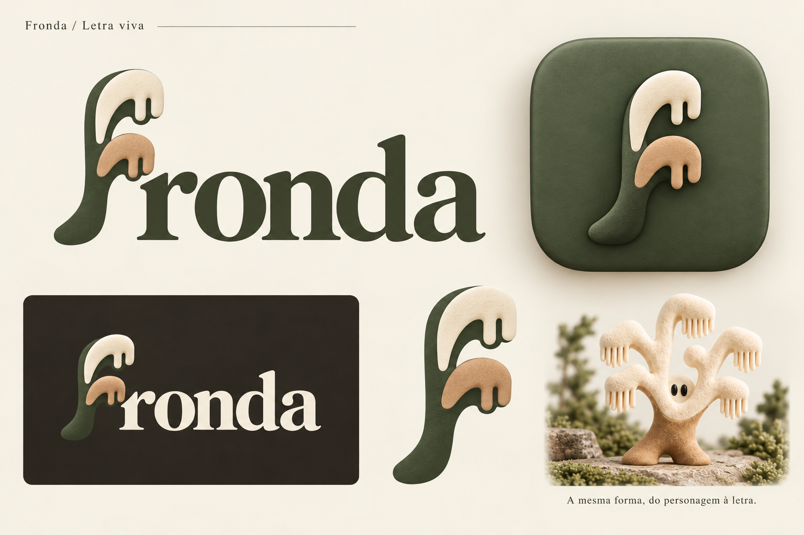

Versão em revisão: esta execução plana foi rejeitada por falta de vida. Ver novo refinamento.
Fronda / Arquivos da marca / v1Uma letra que vem
do personagem.
O f ramificado aprovado, redesenhado em curvas vetoriais. Assinatura em contornos, cores por fundo e versões ópticas para tamanhos pequenos.
O ícone
A haste em argila se destaca sobre o musgo. As duas terminações de cada ramo preservam o vínculo com o mascote.
Em tamanho real
As amostras abaixo usam pixels CSS reais. Em 16 e 24 px, uma terminação mais larga mantém o gesto do ramo sem fechar os vãos. A partir de 32 px, entra o desenho completo.
light24 px
32 px
48 px
64 px
128 px
dark24 px
32 px
48 px
64 px
128 px
16 px
24 px
32 px
48 px
64 px
128 px
A paleta
Marfim#EEE8DA
Musgo profundo#526048
Musgo#8D9877
Argila#BD9674
Pedra#AEA184
Casca#282620
Na assinatura clara, Pedra dá contraste à copa. No fundo escuro, Marfim ilumina os ramos e Argila destaca a haste.
Comparar com a direção aprovada
